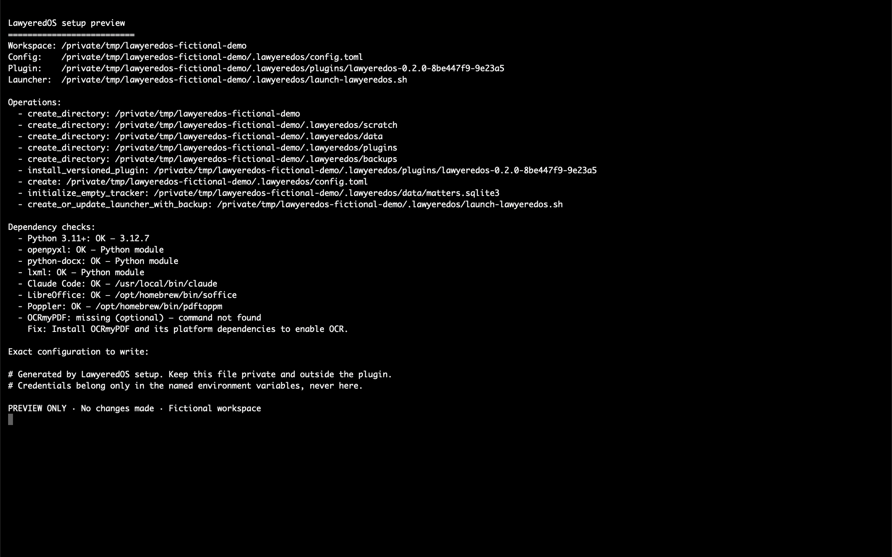

Open the matter
Claude works from the local files and exact matter you choose.
LawyeredOS gives Claude the skills to work on your matters, keep track of progress, and help you decide and do what comes next.
Bring your own Claude subscription. No second legal-software dashboard.
Version 0.2.0 beta.1 · Claude Desktop Code · Local on macOS
How it works
Claude works from the local files and exact matter you choose.
LawyeredOS uses recorded matter history and next actions—not vague chat memory.
Ask Claude to draft, review, redline, or preview an update. You approve material changes.
Setup
Download and extract the ZIP. Open its folder in the Claude desktop app’s Code tab and choose Local. Then paste:
Claude shows the setup plan before writing. Start with a new empty workspace and fictional data. Complete install, update, rollback, dependency, and troubleshooting instructions are included in the download.

Public macOS beta
Free and open source under GPL-3.0-or-later. The development repository stays private; each tested build is published here as a complete, versioned source ZIP.
Download version 0.2.0 beta.1SHA-256: f949d6d33d449b674c5fd1e290646b1b53b2cdf497e2c48d60ab88f09c8177cc
LawyeredOS is software, not legal advice. Verify facts, law, deadlines, calculations, document changes, and final work before relying, sending, signing, filing, or serving. Local files are not the same as offline processing: selected content may be sent to Anthropic under your Claude account, settings, and terms.